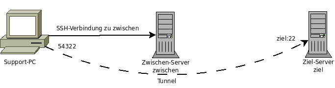

SSH
Dieser Artikel wurde für die folgenden Ubuntu-Versionen getestet:
Ubuntu 17.10 Artful Aardvark
Ubuntu 16.04 Xenial Xerus
Ubuntu 14.04 Trusty Tahr
Artikel für fortgeschrittene Anwender
Dieser Artikel erfordert mehr Erfahrung im Umgang mit Linux und ist daher nur für fortgeschrittene Benutzer gedacht.
Zum Verständnis dieses Artikels sind folgende Seiten hilfreich:
 Es gab einmal eine Zeit, als Computer im Netz über das Telnet-Protokoll zugänglich waren. Da dieses Protokoll keine Verschlüsselung bot, wurde das Mitschneiden von Passwörtern zur trivialen Angelegenheit.
Es gab einmal eine Zeit, als Computer im Netz über das Telnet-Protokoll zugänglich waren. Da dieses Protokoll keine Verschlüsselung bot, wurde das Mitschneiden von Passwörtern zur trivialen Angelegenheit.
Um den Fernzugang zu sichern, schrieb Tatu Ylönen Mitte der 1990er eine Programmsuite – bestehend aus Server, Client und Hilfsprogrammen – die er ssh (secure shell) nannte.
Später gründete er die Firma ssh.com  und bot die Version 2 der SSH-Suite nur noch kommerziell an. Daraufhin wurde von Entwicklern des Betriebssystems OpenBSD der öffentliche Quellcode der Version 1 geforkt. Sie entwickelten das Programm unter dem Namen "OpenSSH" weiter. Diese OpenSSH-Suite wurde fester Bestandteil quasi aller Linux-Distributionen.
und bot die Version 2 der SSH-Suite nur noch kommerziell an. Daraufhin wurde von Entwicklern des Betriebssystems OpenBSD der öffentliche Quellcode der Version 1 geforkt. Sie entwickelten das Programm unter dem Namen "OpenSSH" weiter. Diese OpenSSH-Suite wurde fester Bestandteil quasi aller Linux-Distributionen.
Drei wichtige Eigenschaften führten zum Erfolg von ssh:
Authentifizierung der Gegenstelle, kein Ansprechen falscher Ziele
Verschlüsselung der Datenübertragung, kein Mithören durch Unbefugte
Datenintegrität, keine Manipulation der übertragenen Daten
Mehr Details zur verwendeten Verschlüsselung finden sich weiter unten. Falls man sich auf den eigenen Computer hinter einem DSL-Router per SSH einloggen will, muss man zuvor in diesem eine Portweiterleitung einrichten, sonst kommt keine Verbindung zustande.
Der SSH-Client¶
Das funktioniert normalerweise in einen Terminal-Fenster [2] so:
ssh user@sol-1
user@sol-1's password: Last login: Sun Feb 12 07:38:50 2006 from client.local Sun Microsystems Inc. SunOS 5.9 Generic_112234-03 November 2002 bash-2.05$
Und schon befindet man sich auf einem anderen System, in diesem Fall mit dem Betriebssystem Solaris.
ssh server
Password: Linux vdr 2.4.27-ctvdr-1 #1 Fri Oct 15 18:38:29 UTC 2004 i686 GNU/Linux The programs included with the Debian GNU/Linux system are free software; the exact distribution terms for each program are described in the individual files in /usr/share/doc/*/copyright. Debian GNU/Linux comes with ABSOLUTELY NO WARRANTY, to the extent permitted by applicable law. You have new mail. Last login: Sun Feb 12 07:38:23 2006 from client.local user@server:~$
Oder auf einem anderen Linux-System. Wie man sieht, ist die Angabe des Benutzernamens optional, wenn er auf beiden Systemen gleich ist. Man kann auch einfach einen Befehl anhängen, der anstelle der Terminal-Session ausgeführt wird. Nach der Ausführung des Befehls wird die SSH-Session dann automatisch beendet:
ssh server cat /etc/issue
Password: Debian GNU/Linux 3.1 \n \l
Oder etwas komplizierter - eine Datensicherung machen ("backup"):
user@client:~$ ssh root@server 'cd /etc; tar czvf - network/' | cat > etc_network_backup.tar.gz
Password: network/ network/interfaces network/if-post-down.d/ network/if-pre-up.d/ network/if-up.d/ network/if-down.d/ network/options network/interfaces.pre-etherconf network/interfaces.1 network/run
Bei einer langsamen Verbindung empfiehlt sich zusätzlich die Benutzung der Option -C (großes C), die zusätzlich zur Verschlüsselung eine transparente Kompression der übertragenen Daten aktiviert. Bei einer schnellen Verbindung wird die Kompression aber vermutlich bremsen.
Woher weiß man nun aber, dass man tatsächlich mit dem richtigen Rechner verbunden ist, und nicht ein Angreifer die Verbindung umgeleitet hat? Dafür gibt es den Host-Schlüssel, der jeden SSH-Server eindeutig identifiziert. Greift man zum ersten Mal auf einen bestimmten Server zu, kennt man diesen Schlüssel natürlich noch nicht. (Außer man hat ihn sich auf anderen Wegen im Voraus besorgt.)
ssh server
The authenticity of host 'server (192.168.1.5)' can't be established. ECDSA key fingerprint is b5:0e:ec:b7:16:06:e6:24:a6:39:18:58:4e:ec:3b:d1. Are you sure you want to continue connecting (yes/no)? yes Warning: Permanently added 'server' (ECDSA) to the list of known hosts. Password:
Wenn gerade in diesem Moment jemand die Verbindung gekapert hat, hat man natürlich Pech, außer man kann den Administrator des Servers nach dem richtigen Fingerprint des Host-Schlüssels fragen.
Den ECDSA-Fingerprint eines Servers kann man mit dem Systemprogramm ssh-keygen erfahren:
ssh-keygen -f /etc/ssh/ssh_host_ecdsa_key.pub -l
gibt den Fingerprint und einige weitere Informationen aus, z.B. 256 b5:0e:ec:b7:16:06:e6:24:a6:39:18:58:4e:ec:3b:d1 root@server (ECDSA). Wenn man auf Nummer sicher gehen möchte, lässt man sich vom Administrator des Servers diese Ausgabe mitgeben (evtl. ausdrucken) und kann dann beim ersten Verbindungsversuch überprüfen, ob man sich tatsächlich zum richtigen SSH-Server verbunden hat und nicht zu einem dazwischen geschalteten Angreifer.
Bei allen weiteren Kontakten stellt das ssh-Programm jedoch von nun an über asymmetrische Kryptografie sicher, dass der Server auch über den richtigen privaten Schlüssel verfügt, der zum öffentlichen, in der Datei ~/.ssh/known_hosts abgelegten passt, und verweigert im Zweifelsfall den Verbindungsaufbau. Hier eine Beispielausgabe:
@@@@@@@@@@@@@@@@@@@@@@@@@@@@@@@@@@@@@@@@@@@@@@@@@@@@@@@@@@@ @ WARNING: REMOTE HOST IDENTIFICATION HAS CHANGED! @ @@@@@@@@@@@@@@@@@@@@@@@@@@@@@@@@@@@@@@@@@@@@@@@@@@@@@@@@@@@ IT IS POSSIBLE THAT SOMEONE IS DOING SOMETHING NASTY! Someone could be eavesdropping on you right now (man-in-the-middle attack)! It is also possible that a host key has just been changed. The fingerprint for the ED25519 key sent by the remote host is SHA256:2iJAHZZHlYMrlrBGw3t7Ma62TuZ0p7p+av3O4W+cpHY. Please contact your system administrator. Add correct host key in /home/tux/.ssh/known_hosts to get rid of this message. Offending ECDSA key in /home/tux/.ssh/known_hosts:6 remove with: ssh-keygen -f "/home/tux/.ssh/known_hosts" -R 172.217.22.227 ED25519 host key for 172.217.22.227 has changed and you have requested strict checking. Host key verification failed.
Die Ausgabe enthält auch gleich das Kommando, das man ausführen muss, falls sich der Schlüssel aus legitimen Gründen einmal geändert haben sollte (bspw. weil das System neu aufgesetzt wurde):
ssh-keygen -f <DATEI> -R <HOST>
Im obigen Beispiel also
ssh-keygen -f "/home/tux/.ssh/known_hosts" -R 172.217.22.227
Sollte die Verbindung nicht mehr reagieren, z.B. wenn der SSH-Server heruntergefahren wurde, lässt sich der SSH-Client mit der Eingabe von "~." (nacheinander) beenden.
Hinweis:
Wer (noch) einen Windows-Desktop benutzt und über das SSH-Protokoll auf eine Linux-Maschine zugreifen will, kann das Programm PuTTY nutzen.
Benutzeroberfläche für die Verbindungsverwaltung¶
Wem es zu mühsam ist, auf der Kommandozeile die SSH-Verbindung zu einem Server aufzubauen, der sucht vielleicht ein grafisches Programm, um Verbindungsdaten zu verwalten.
PuTTY - gibt es sowohl für Linux als auch für Windows. Das Programm ist in den offiziellen Paketquellen enthalten.
PAC Manager
- (Perl Auto Connector) nicht in den offiziellen Paketquellen enthalten, aber über SourceForge wird ein Fremdpaket angeboten, das manuell installiert werden kann.Gnome-RDP
- mit diesem Programm kann man nicht nur RDP- und VNC-Verbindungen aufbauen, sondern auch SSH-Terminalsitzungen. Leider kann man in der aktuellen Version die Zugangspasswörter nicht speichern lassen und keine Angaben zum verwendeten Port machen. Es funktioniert somit nur mit Servern, die den Standard-SSH-Port 22nutzen. In den offiziellen Paketquellen enthalten, benötigt aber Mono als Voraussetzung.
.ssh/config¶
Wenn man sich auf der Konsole mit einem anderen Server verbinden möchte, muss man evtl. z.B. Port und Benutzernamen angeben. Um das Ganze zu vereinfachen, kann man Voreinstellungen für ssh in der config-Datei $HOME/.ssh/config hinterlegen. Hier ein Beispiel:
# ssh (secure shell) configuration file
Host test1
HostName 123.456.789.0
Port 980
User MeinBenutzerName
Host test2
HostName test.mynet.local
User test
CheckHostIP no
Cipher blowfish
Host foobar
HostName domain.tld
Port 55550
User fanta
IdentityFile ~/.ssh/private_ssh_key_rsaNun braucht man nicht mehr
ssh MeinBenutzerName@123.456.789.0 -p980
zu schreiben, es reicht nun ein kurzes
ssh test1
für einen Verbindungsaufbau. Alle Parameter, die man verwenden kann, findet man unter openbsd.org oder in der Manpages von ssh_config.
Der SSH-Server¶
Im Gegensatz zum SSH-Klienten ist der SSH-Server unter Ubuntu standardmäßig nicht installiert. Er lässt sich über das Paket
openssh-server
 mit apturl
mit apturl
Paketliste zum Kopieren:
sudo apt-get install openssh-server
sudo aptitude install openssh-server
installieren [1].
Die Konfiguration des SSH-Servers sshd findet über die Datei /etc/ssh/sshd_config statt. Die Voreinstellungen sind aber durchweg akzeptabel.
Wer den sshd auf einem Gateway oder Router betreibt oder aus einem anderen Grund mehrere Netzwerkschnittstellen verwendet (bspw. WLAN), der möchte dort vielleicht die ListenAddress-Direktive benutzen, um den Server nur an bestimmten Netzwerk-Schnittstellen laufen zu lassen.
Außerdem kann es sinnvoll sein, PermitRootLogin auf no zu setzen. Dann kann sich niemand direkt als root einloggen, sondern man meldet sich unter seinem Benutzernamen an und ruft dann su oder sudo -s auf. Dies ist aber unter Ubuntu nur relevant, sollte man dem "root"-Benutzerkonto ein Passwort zugewiesen haben.
Mit den Direktiven AllowUsers und AllowGroups bzw. DenyUsers und DenyGroups lässt sich noch genauer festlegen, welche Benutzer sich anmelden dürfen und welche nicht. Dies empfiehlt sich besonders bei Servern. AllowGroups admin verbietet bspw. allen Benutzern, die keine Mitglieder der Gruppe admin sind, den Zugriff.
Wer sich ausschließlich über das noch sicherere Public-Key-Verfahren anmelden will, der sollte die Benutzung von Passwörtern mit PasswordAuthentication no abschalten.
Falls lange Wartezeiten bei der Anmeldung am SSH-Server auftreten, könnte das an einer fehlgeschlagenen Namensauflösung liegen. Da man SSH normalerweise sowieso über die IP benutzt, können diese DNS-Anfragen in der sshd_config deaktiviert werden. Der dafür nötige Eintrag wäre UseDNS no.
Nach erfolgter Änderung der Datei sshd_config muss der Server mit dem Befehl:
sudo service ssh restart # ab Ubuntu 15.04
neugestartet werden, damit die Änderungen wirksam werden.
Hinweis:
Standardmäßig wird der SSH-Server beim Booten geladen. Unter Ubuntu 14.04 ist Upstart für den Autostart des SSH-Servers zuständig. Wie man den Autostart deaktiviert, wird im Upstart-Artikel beschrieben. Ubuntu 16.04 verwendet für die Steuerung des Autostart systemd .
Identifikationsschlüssel übernehmen¶
Bei der Installation des SSH-Servers wird ein Satz Identifikationsschlüssel für das System (Fingerprints) erzeugt. Die entsprechenden Dateien lauten /etc/ssh/ssh_host*. Möchte man die Identifikationsschlüssel aus einem bestehenden System oder einer früheren Installation übernehmen, so muß man die oben genannten Dateien ersetzen. Sinnvoll ist dies z.B. im Rahmen einer Neuinstallation oder wenn man auf ein und dem selben Rechner mehrere Linux-Versionen installiert hat. Damit vermeidet man auf Client-Seite die Offending-Key-Problematik (siehe Problembehebung).
Dateitransfer¶
Wenn man also ein Protokoll hat, das so sicher wie nach dem heutigen Stand der Technik möglich Daten durch einen verschlüsselten Kanal senden und empfangen kann, dann wäre es wohl Verschwendung, dieses Protokoll nur für interaktive Terminal-Sessions zu benutzen. Sehr häufig möchte man bspw. einfach nur Dateien sicher von einem System zum anderen bewegen. Dafür existieren verschiedene Programme der grafischen Benutzeroberfläche sowie gleich zwei Terminalbefehle nämlich scp und sftp.
Transfer von der Kommandozeile¶
scp¶
Das Kommandozeilenwerkzeug scp funktioniert in etwa so wie das normale Unix-Kommando cp, nur dass es über Systemgrenzen hinweg funktioniert. Jedes Datei- oder Verzeichnisargument kann dabei optional, getrennt durch einen Doppelpunkt, durch einen vorangestellten Benutzer- bzw. Hostnamen ergänzt werden. Dabei werden weggelassene Teile durch den aktuellen Benutzernamen, localhost bzw. das Homeverzeichnis (bzw. das aktuelle Verzeichnis) ergänzt, etwa so:
scp benutzerx@server1:datei1 datei2 benutzery@server2:
In diesem Beispiel wurde die datei1 aus dem Homeverzeichnis von benutzerx auf server1 und die datei2 aus dem aktuellen Verzeichnis des lokalen Hosts in das Homeverzeichnis von benutzery auf server2 kopiert.
Der Befehl scp versteht auch einige von cp bekannte Optionen, bspw. -r für das rekursive Kopieren ganzer Verzeichnisbäume. Bedauerlicherweise unterstützt scp aber nicht alle cp-Optionen, die für das exakte Klonen von Verzeichnissen, inkl. aller Dateirechte und symbolischen Verknüpfungen notwendig sind. Für die exakte Replikation sollte deswegen entweder das Werkzeug rsync -e ssh genutzt werden (man beachte die Handbuchseite zu diesem Tool) oder der oben schon genutzte Trick mit tar und einer Pipe.
ssh root@server 'cd verzeichnis; tar czvf - verz./dateien' | tar xzf -
sftp¶
Die andere Möglichkeit des Dateitransfers lautet sftp. Das funktioniert genau so wie der normale Kommandozeilen-FTP-Client:
sftp server
Connecting to server... user@server's password: sftp> pwd Remote working directory: /export/home/user sftp> dir [...] wichtige_datei.txt [...] sftp> get wichtige_datei.txt Fetching /export/home/user/wichtige_datei.txt to wichtige_datei.txt /export/home/user/wichtige_datei.txt 100% 62KB 62.2KB/s 00:00 sftp> quit
Mit dem Befehl help bekommt man eine Übersicht über die möglichen Kommandos.
Entfernte Dateisysteme einbinden¶
Man kann das Dateisystem eines entfernten Rechners in sein eigenes Dateisystem mittels sshfs einbinden. Damit ist eine transparente Nutzung von Dateien auch über unsichere Netze hinweg möglich.
Grafische Programme zum Dateitransfer¶
Gnome/Ubuntu¶
Der Gnome-Dateimanager Nautilus unterstützt das SSH-Protokoll von Haus aus. Dazu benutzt man eine Adresse der Form ssh://rechnername/pfad, um über SSH die Dateien auf dem angegebenen Rechner zu sehen. Wenn man sich als ein anderer Benutzer anmelden möchte, verwendet man stattdessen eine Adresse der Form ssh://andererbenutzer@rechnername/pfad. Alternativ können auch die Hosts aus der ~/.ssh/config verwendet werden. Dort lassen sich auch noch andere SSH-Einstellung, wie. z.B SSH-Keys, definieren. Der Zugriff erfolgt mit ssh://hostname. Diese Adressen funktionieren übrigens auch in einigen anderen Gnome-Anwendungen.
KDE/Kubuntu¶
Auch bei KDE ist SSH-Unterstützung eingebaut: Mit einer Adresse der Form fish://rechnername/pfad kann man auf die Dateien auf einem anderen Rechner zugreifen, und mit fish://andererbenutzer@rechnername/pfad meldet man sich als anderer Benutzer auf dem Zielrechner an. Dies funktioniert im Konqueror sowie in allen KDE-Anwendungen. Man kann also beispielsweise im Malprogramm KolourPaint via Datei -> Öffnen.. und dann oben in der Adresszeile eine fish://-Adresse eingeben, um direkt ein Bild auf einem anderen Rechner anzusehen oder zu bearbeiten. Im Dateimanager Dolphin (Kubuntu-Standard) können über das Bookmark "Netzwerk" und den Assistenten "Netzwerkordner hinzufügen" neue ssh-basierte Netzwerkordner als feste Bookmarks erstellt werden. Wenn der Zielrechner ebenfalls ein UTF-8 codiertes Dateisystem hat, sind u.U. die Umlaute falsch angezeigt. Um dies zu ändern, muss man im Konqueror eine fish-Adresse aufrufen und kann nun unter "Extras -> Entfernte Zeichencodierung wählen..." die entsprechende Codierung einstellen. Diese Einstellung ist fortan auch in Dolphin gültig. Diese Option einzustellen wird in KDE4 vermutlich in Dolphin selbst möglich sein.
Xfce/Xubuntu¶
Der Xfce-Dateimanager Thunar unterstützt das SSH-Protokoll wie Nautilus unter GNOME. Siehe Gnome-Ubuntu.
Weitere grafische Programme¶
Die meisten grafischen FTP-Clients (FTP) unterstützen auch sftp oder scp über das SSH-Protokoll. Beim Gnome FTP-Cient gFTP etwa muss man unter "FTP -> Optionen -> Netz -> Voreingestelltes Protokoll" in der Drop-Down-Liste SSH2 an Stelle von FTP auswählen. Leider hat gftp Probleme, wenn man neben Passwörtern auch Public-Keys (siehe Public-Key-Verfahren) benutzt. Das funktioniert nur mit dem SSH-Agenten (ebenfalls weiter unten beschrieben) und der Einstellung "Benötige SSH Benutzername/Passwort nicht" in "FTP -> Optionen -> SSH".
SSH-Verbindungen zu Datenverzeichnissen auf Fremdrechnern unterstützen auch Datensynchronisationsprogramme wie Unison und Backupprogramme wie Keep.
Authentifizierung über Public-Keys¶
Wem die Authentifizierung über Passwörter trotz der Verschlüsselung zu unsicher ist, - immerhin könnte das Passwort ja erraten werden - der benutzt am besten das Public-Key-Verfahren. Hierbei wird asymmetrische Verschlüsselung genutzt, um den Benutzer zu authentifizieren. Der (oder die) öffentliche(n) Schlüssel des Benutzers befindet sich dabei in der Datei ~/.ssh/authorized_keys des Zielsystems, der private Schlüssel in einer Datei (meist id_rsa) im Verzeichnis ~/.ssh auf dem lokalen System, wo er zusätzlich von einer "pass phrase" geschützt wird. Wenn man sich nun mit der Public-Key-Methode auf einem SSH-Server anmelden möchte, so schickt der Server dem Klienten eine zufällig generierte Challenge. Der Server verschlüsselt diesen Datenblock mit dem öffentlichen Schlüssel des Klienten und wenn der Klient diesen Chiffre mit dem zugehörigen privaten Schlüssel wieder entschlüsseln kann (wofür nötigenfalls die Passphrase abgefragt wird), ist die Identität des Benutzers bestätigt.
Damit man dieses Verfahren überhaupt verwenden kann, muss man sich zunächst mit Hilfe des Kommandozeilenprogramms ssh-keygen ein entsprechendes Schlüsselpaar erzeugen:
ssh-keygen -t rsa -b 4096
Generating public/private rsa key pair. Enter file in which to save the key (/home/user/.ssh/id_rsa): Enter passphrase (empty for no passphrase): Enter same passphrase again: Your identification has been saved in /home/user/.ssh/id_rsa. Your public key has been saved in /home/user/.ssh/id_rsa.pub. The key fingerprint is: 24:55:ee:67:83:72:82:55:5f:b9:b4:09:2a:fa:56:a1 user@client.local The key's randomart image is: +--[ RSA 4096]----+ | | | | | | | + . | | S E | | . + + | | .o . o.| | o.oo. oo| | ==o.BO+| +-----------------+
Der voreingestellte Dateiname (id_rsa) kann einfach mit der Taste ⏎ bestätigt werden, außer man möchte sich ein weiteres Schlüsselpaar erzeugen. Von der Benutzung einer leeren Passphrase ist jedoch abzuraten, weil sonst jeder, der evtl. in den Besitz dieser Datei kommt, sofortigen Zugriff auf alle zugehörigen Systeme erhält.
Nun muss noch der öffentliche Schlüssel, zu erkennen an der Endung .pub (id_rsa.pub), auf dem Zielsystem deponiert werden. Dazu dient das Programm ssh-copy-id. Zu diesem Zeitpunkt muss die Authentifizierung per Passwort noch erlaubt sein (PasswordAuthentication yes):
ssh-copy-id -i ~/.ssh/id_rsa.pub user@server
Password: Now try logging into the machine, with "ssh 'user@server'", and check in: .ssh/authorized_keys to make sure we haven't added extra keys that you weren't expecting.
Hinweis:
Sollte man - warum auch immer - bei der Angabe des Dateinamens des Schlüssels die Endung .pub vergessen, so wird diese automatisch durch ssh-copy-id angehängt. Man kann also nie aus Versehen seinen privaten Schlüssel Namens id_rsa (also ohne Endung .pub) übertragen.
Experten-Info:
Wenn man die Sicherheit des Schlüssels weiter erhöhen möchte, benutzt man anstatt dem rsa Verschlüsselungsverfahren, die Eliptische Kurve ED25519.
Der Schlüssel wird durch diesen Befehl erstellt:
ssh-keygen -t ed25519
und durch übertragen:
ssh-copy-id -i ~/.ssh/id_ed25519.pub user@server
Hinweis:
Wenn man mit dem aktuellen puttygen unter Windows die Schlüsseldateien erstellt hat kopiert man direkt aus puttygen den angezeigten Block in die authorized_keys hinein.
Die Datei muss folgendermaßen aussehen:
ssh-rsa rsa-pub-key Key Kommentar
Sollte ssh-copy-id nicht funktionieren, kann man den öffentlichen Schlüssel auch anders auf das Zielsystem kopieren und in die Datei ~/.ssh/authorized_keys einfügen. Dabei ist unbedingt darauf zu achten, dass die Datei mit der Endung .pub und nicht der private Schlüssel ohne diese Endung verwendet wird:
cat id_rsa.pub | ssh server 'cat>> ~/.ssh/authorized_keys'
Wenn ein vom Standard abweichender Dateiname für den Key gewählt wurde, muss er mittels der Kommandozeilenoption -i ~/pfad/dateiname gesondert angegeben werden. Für die dauerhafte Nutzung empfiehlt sich ein Eintrag in der ~/.ssh/config mittels IdentityFile-Parameter.
Anschließend kann man sich ohne Passwort anmelden:
ssh user@server
Enter passphrase for key '/home/user/.ssh/id_rsa': Linux server.local 2.6.12-10-686 #1 Mon Feb 13 12:18:37 UTC 2006 i686 GNU/Linux The programs included with the Ubuntu system are free software; the exact distribution terms for each program are described in the individual files in /usr/share/doc/*/copyright. Ubuntu comes with ABSOLUTELY NO WARRANTY, to the extent permitted by applicable law. Last login: Fri Mar 3 03:51:14 2006
In einigen Fällen tritt ein Fehler beim ersten Anmeldeversuch auf:
"Agent admitted failure to sign using the key."
In diesem Fall einfach ssh-add ausführen.
ssh-add
Identity added: /home/user/.ssh/id_rsa (/home/user/.ssh/id_rsa)
Hinweis:
Falls es noch nicht klappt kann es daran liegen, dass die Rechte beim Server nicht korrekt sind. sshd achtet darauf, dass das Homeverzeichnis, das dem Login-Namen entspricht (also die "Mappe" selbst), das .ssh-Verzeichnis und authorized_keys nur für den Eigentümer Schreibrechte hat. Hintergrund ist wohl, die Gefahr zu verringern, dass authorized_keys manipuliert wird und man keinen Zugriff mehr hat, wenn der Passwortzugang (s.u.) gesperrt ist.
Wer also bei bestimmten Konten auf dem Server auch einer Gruppe Schreibrechte gewähren will, muss evtl. die Optionen in /etc/ssh/sshd_config prüfen.
Jetzt ist es aber immer noch möglich, sich mit dem Passwort anzumelden. Um dies zu unterbinden, sind in der Datei /etc/ssh/sshd_config die Optionen
PasswordAuthentication no UsePAM no
zu setzen und mit einem
sudo /etc/init.d/ssh reload
die Konfiguration neu einlesen lassen.
Alternativ: Auf der Serverseite eingeben passwd -l <user>. Damit sind Passwörter nur für ausgewählte Accounts sperrbar.
Verschlüsseltes Home-Verzeichnis¶
Man sollte darauf achten, dass bei verschlüsselten Home-Verzeichnissen (ecryptfs) auch die authorized_keys mit verschlüsselt ist und somit nicht zur Authentifizierung verwendet werden kann, solange das Home-Verzeichnis nicht entschlüsselt ist (durch parallele Anmeldung mit dem gleichen Benutzernamen).
Eine Abhilfe ist z.B. die authorized_keys in ein nicht-verschlüsseltes Verzeichnis zu legen (z.B. /etc/ssh/username/) und die Einstellung AuthorizedKeysFile in der /etc/ssh/sshd_config auf /etc/ssh/%u/authorized_keys zu ändern (Root-Rechte und Neustart des SSH-Daemons erforderlich).
sudo mkdir /etc/ssh/$USER sudo mv $HOME/.ssh/authorized_keys /etc/ssh/$USER/ ln -s /etc/ssh/$USER/authorized_keys $HOME/.ssh/
Quelle: SSH with authorized_keys to an Ubuntu system with encrypted homedir?
Der SSH-Agent¶
Unter grafischen Desktop-Sitzungen (Unity, Gnome, etc.) startet automatisch im Hintergrund der SSH-Agent. In diesem werden automatisch die privaten Schlüssel abgelegt, sodass nicht jedes Mal die "pass phrase" abgefragt wird. Dies verbindet die Bequemlichkeit der Bedienung mit der Sicherheit des Public-Key-Verfahrens.
Zur direkten Interaktion mit dem SSH-Agenten im Terminal dient das Programm ssh-add, wobei die Option -l die augenblicklich gespeicherten Schlüssel auflistet:
ssh-add -l
The agent has no identities.
ssh-add
Enter passphrase for /home/user/.ssh/id_rsa: Identity added: /home/user/.ssh/id_rsa (/home/user/.ssh/id_rsa)
ssh-add -l
1024 24:55:ee:67:83:72:82:55:5f:b9:b4:09:2a:fa:56:a1 /home/user/.ssh/id_rsa (RSA)
ssh server
Last login: Wed Mar 8 11:11:58 2006 from 192.168.4.56
Wenn man nicht über Unity oder eine andere graphische Benutzeroberfläche, die unter dem ssh-agent läuft, eingeloggt ist, funktioniert das so leider nicht. Dann muss man vorher noch ein
exec ssh-agent bash
ausführen, um eine Shell zu öffnen, die mit dem ssh-agent kommunizieren kann.
Arbeitet man oft im Terminal und möchte nicht immer wieder die "pass phrase" eingeben, kann man das folgende in seine .bashrc eintragen:
if [ $SSH_AGENT_PID ]; then
if [[ $(ssh-add -l) != *id_?sa* ]]; then
ssh-add -t 2h ## Haltbarkeit von 2 Std.
fi
fiMan kann aber auch in seiner lokalen Konfiguration $HOME/.ssh/config
AddKeysToAgent yes
einfügen. Dann wird bei der ersten Ausführung von ssh der Schlüssel automatisch zum Agent hinzugefügt (ab openssh 7.2).
Login über mehrere Rechner¶
Ab und zu muss man sich von Rechner zu Rechner hangeln, da kein direkter Zugriff besteht. Doch der Key wird nicht automatisch übertragen. Darum besteht die Möglichkeit dies direkt in der ~/.ssh/config zu vermerken.
ForwardAgent yes
SSH-Askpass¶
Wenn eines der Pakete ssh-askpass, ssh-askpass-gnome, ssh-askpass-fullscreen oder gtk-led-askpass installiert ist, kann ssh-add die Passphrase in Ermangelung eines Terminals auch über ein Dialogfenster abfragen. Das nutzt man sinnvollerweise, um seinen Schlüssel gleich nach der Anmeldung auf einem grafischen System zu laden [5]. Für KDE-Nutzer gibt es das Paket ksshaskpass, das für ssh-add eine graphische Oberfläche zur Verfügung stellt.
Single-Sign-On¶
Wem immer noch zu umständlich ist, beim Login nacheinander erst das Login-Passwort und dann die SSH-Passphrase einzugeben, der installiert sich stattdessen das Paket libpam-ssh. Mit den richtigen Einstellungen wird man beim Login nach der Eingabe des Benutzernamens nicht mehr nach dem Passwort, sondern nach der SSH-Passphrase gefragt und kann sich danach ohne nervige Passwortabfrage mittels SSH auf seinen Systemen bewegen. Nur wenn man die Passphrase nicht richtig eintippt, kann man sich stattdessen auch mit seinem normalen Passwort authentifizieren. Zu beachten ist allerdings, dass der GNOME-Schlüsselbund dann nicht mehr automatisch freigeschaltet wird.
Hinweis:
Macht man hier einen Fehler, kann man sich eventuell nicht mehr am System anmelden. Sollte das passiert sein, ist es normalerweise noch möglich, sich per SSH einzuloggen und den Fehler zu beheben. Wenn auch das nicht mehr hilft, muss man das System zum Reparieren im Single-User-Runlevel oder von einer Live-CD starten.
X-Forwarding¶
Mit dem X11-Forwarding kann man auch grafische Programme, die man über SSH auf einem anderen Rechner startet, auf dem eigenen Display anzeigen lassen, und zwar unabhängig davon, welches Betriebssystem auf dem entfernten Rechner läuft (siehe Bild.) Das Programm muss sich nur an den X11-Standard halten, was leider die meisten Windows- und Mac-Programme ausschließt.
Um das X11-Forwarding zu aktivieren, muss man dem ssh-Befehl die Option -X (großes X) hinzufügen, die dem Programm eingeschränkte Rechte am eigenen Display einräumt. Für den Fall, dass es zu einem Programmabbruch kommt, weil diese eingeschränkten Rechte nicht ausreichen, existiert noch die Option -Y, die dem Programm volle Rechte gewährt. Diese sollte man jedoch nicht verwenden, wenn man dem Administrator des entfernten Rechners nicht vertraut, denn sie öffnet einen Tunnel, der auch in der umgekehrten Richtung für einen Angriff auf das eigene Display genutzt werden könnte. Vorsicht: mit der Option -x (kleines x) wird X11-Forwarding deaktiviert.
Hinweis: bei Nutzung von VNC (z.B. für Fernwartung) muss auf dem Server X11VNC installiert sein.
Einen deutlichen Geschwindigkeitszuwachs erreicht man durch die Wahl einer anderen Verschlüsselung und der Aktivierung der Kompression der Daten für langsame Verbindungen (DSL, etc.) mit diesen zusätzlichen Optionen im Aufruf von ssh: -c arcfour,blowfish-cbc -XC. Beispiele:
Öffnen des Programms Leafpad:
ssh -X user@server leafpad &
Zur bequemeren Nutzung entfernter Programme können auch die Panel-Programme der jeweiligen Desktop-Umgebung gestartet werden, z.B. LXPanel, Xfce Panel und andere:
ssh -X user@server lxpanel &
Da Panel-Programme in der Regel nicht über eine Funktion "schließen" verfügen kann man diese z.B. mittels xkill schließen.
Serverkonfiguration¶
Hinweis:
Dies sollte in der Regel nicht notwendig sein.
Auf dem Server muss hierfür das Paket
xauth
installiert werden, wenn es das noch nicht ist.
Außerdem muss dem SSH-Daemon des Servers mitgeteilt werden, dass X-Forwarding verwendet wird. Das wird über die Konfigurationsdatei /etc/ssh/sshd_config erledigt. Dort werden die Optionen:
X11Forwarding yes X11UseLocalhost no
gesetzt. Danach ist ein Neustart des Daemons erforderlich.
Zusätzlich müssen in der Client-Konfigurationsdatei /etc/ssh/ssh_config die Einträge:
ForwardX11 yes
und
ForwardX11Trusted yes
durch Entfernen von # am Zeilenanfang einkommentiert werden.
SSH-Tunnel¶
Wenn man mit Hilfe von SSH so ein nicht ganz triviales Protokoll wie X-Window tunneln kann, dann muss das doch auch mit anderen Protokollen funktionieren, oder? - Aber sicher geht das. Allerdings ist die Syntax für den SSH-Tunnelbau ein wenig verwirrend:
ssh -L [bind_address:]port:host:port user@server ssh -R [bind_address:]port:host:port user@server
Hierbei richtet die Option -L laut Dokumentation eine lokale, und die Option '-R' eine entfernte (englisch remote) Port-Weiterleitung ein. Der verschlüsselte Tunnel wird dabei immer zwischen dem eigenen Rechner und server hergestellt. Die Verbindung vom Ende des Tunnels zu host läuft dagegen unverschlüsselt ab, und wird aus Sicht des betreffenden Systems angegeben, weswegen man host in den allermeisten Fällen wohl auf "localhost" setzen sollte. Hierbei darf "localhost" nicht mit dem lokalen Rechner verwechselt werden. Es handelt sich um "localhost" von server aus betrachtet, daher um den Server selbst.
Die Option -L bzw. -R gibt dabei die Richtung an, aus der der Tunnel benutzt werden kann. Bei -L vom eigenen Rechner zum entfernten hin, bei -R in der entgegengesetzten Richtung. (Das merkt man sich am Besten als normaL und Rückwärts.)
Das erste port-Argument bezeichnet dabei den Einstiegsport in die Verbindung. Zu beachten ist hierbei, dass die Öffnung eines privilegierten Ports, also unter 1024, nur dem Superuser root gestattet ist. Man sollte also auf die höheren Ports ausweichen.
Mit dem optionalen Parameter bind_address kann man festlegen, auf welchen Netzwerkschnittstellen die Weiterleitung laufen soll, wobei localhost der Standard ist. Ein * oder ein leeres bind_address-Argument vor dem Doppelpunkt bedeutet, dass die Weiterleitung an allen Schnittstellen läuft. Möglicherweise funktioniert das nicht auf jedem Ubuntu-System auf Anhieb, da die IPv6-Adresse das irgendwie verhindert, weshalb man den SSH-Tunnel mit dem Argument -4 auf die IPv4-Schnittstellen beschränken muss.
Der zweite port-Parameter gibt schließlich an, auf welchen Port von host die Weiterleitung gehen soll.
Ein weiteres nützliches Argument ist die Option -N, die das Erzeugen einer Terminal-Sitzung auf dem entfernten System unterbindet, wenn man nur die Port-Weiterleitung benutzen möchte.
Beispiele¶
Weiterleitung von Port 8000 auf dem lokalen System an den Webserver (Port 80) auf server:
ssh -L 8000:localhost:80 server -N & netstat -anp --inet | egrep '(^Proto|8000)'
Proto Recv-Q Send-Q Local Address Foreign Address State PID/Program name tcp 0 0 127.0.0.1:8000 0.0.0.0:* LISTEN 10843/ssh
fg
ssh -L 8000:localhost:80 server -N [Strg-C] Killed by signal 2.
Dasselbe, aber es wird nicht nur vom lokalen Host weitergeleitet, sondern von allen Schnittstellen (hierzu ist die Option GatewayPorts in der Server-Konfiguration entsprechend zu setzen, genaueres zu finden in der Manpage; man wähle diese Option mit Bedacht!):
ssh -L *:8000:localhost:80 server -N -4 & netstat -anp --inet | egrep '(^Proto|8000)'
Proto Recv-Q Send-Q Local Address Foreign Address State PID/Program name tcp 0 0 0.0.0.0:8000 0.0.0.0:* LISTEN 10906/ssh
Umgekehrte Richtung. Benutzern auf server wird ermöglicht, über localhost:3306 auf den MySQL-Server auf client zuzugreifen:
ssh -R 3306:localhost:3306 server
Last login: Sat Mar 11 23:24:20 2006 from 192.168.4.56 netstat -an --inet | egrep '(^Proto|3306)' Proto Recv-Q Send-Q Local Address Foreign Address State tcp 0 0 127.0.0.1:3306 0.0.0.0:* LISTEN exit logout Connection to server closed.
Zur Veranschaulichung folgt hier noch einmal eine grafische Darstellung dieser Beispiele:
Doppelter SSH-Tunnel über zwei Konsolen:
supportpc$ ssh -L 54321:localhost:54321 zwischennutzer@zwischen zwischen$ ssh -L 54321:localhost:8080 zielnutzer@ziel
SSH-Tunnel über Zwischenrechner mit Zielrechner verbinden:

supportpc$ ssh -L 54322:ziel:22 zwischennutzer@zwischen
Weitere Verschlüsselungsdetails¶
Symmetrische Verschlüsselung¶
Wer als Laie an Verschlüsselung denkt, der denkt meist an die "symmetrische Verschlüsselung". Hierbei gibt es genau einen Schlüssel, mit dem ein Datensatz verschlüsselt wird. Nur wer diesen Schlüssel kennt (oder durch geschicktes Probieren herausfindet) kann die Verschlüsselung umkehren und den Klartext wieder extrahieren. Bekannte und bewährte Algorithmen wie TripleDES, AES und Twofish wurden so konzipiert, dass das Erraten des Schlüssels sehr aufwendig und damit teuer ist – selbst wenn eine verschlüsselte Nachricht auch entschlüsselt vorliegt. Das größte Problem bei der Benutzung von symmetrischer Verschlüsselung ist daher, den Schlüssel sicher zum Kommunikationspartner zu befördern.
Asymmetrische Verschlüsselung¶
Um dieses Problem der symmetrischen Verschlüsselung zu umgehen, gibt es andere Algorithmen, die das für eine erfolgreiche Ver- und Entschlüsselung nötige gemeinsame Geheimnis so verschleiern, dass man es öffentlich verteilen kann. Bei diesem Verfahren, asymmetrische Verschlüsselung genannt, wird nicht ein Schlüssel erzeugt, sondern ein Schlüsselpaar. Dieses hängt mathematisch voneinander ab, kann aber nur mit sehr viel Aufwand voneinander abgeleitet werden. Jeweils zwei zueinander passende Schlüssel wirken dabei genau entgegengesetzt: Was mit dem einen Schlüssel verschlüsselt wird, kann nur durch den anderen Schlüssel einfach wieder entschlüsselt werden. Der Sender und eventuelle Angreifer müssen dagegen für die Entschlüsselung aufwendige Rechnungen anstellen, die sehr viel Rechenzeit kosten würden. Dies ermöglicht es, einen der beiden Schlüssel öffentlich zur Verfügung zu stellen. Mit diesem kann man dann Sendungen verschlüsseln, die man aber "einzig und allein" mit dem anderen Schlüssel, den man niemals weitergibt, entschlüsseln kann.
Im Gegenzug kann man ein Datenpaket auch mit dem eigenen privaten Schlüssel chiffrieren. Wenn dieser Chiffretext sich dann mit dem öffentlichen Schlüssel wieder in Klartext zurückverwandeln lässt, weiß jeder, dass die Nachricht vom Besitzer des privaten Schlüssels kommt. Diese Anwendungsmöglichkeit nennt man digitale Signatur. Der Umgang mit asymmetrischen Verschlüsselungsalgorithmen wie RSA oder DSA erfordert signifikant mehr Rechenleistung als der mit symmetrischen. Daher ist es gängige Praxis, am Beginn der Kommunikation mit Hilfe des öffentlichen Schlüssels einen neu generierten, symmetrischen Session-Schlüssel auszutauschen und für den Rest der Kommunikation auf symmetrische Verschlüsselung umzusteigen.
Problembehebung¶
Offending Keys¶
Die Fehlermeldung
Warning: the ECDSA host key for 'SERVER_IP' differs from the key for the IP address '123.123.123.123' Offending key for IP in /home/BENUTZER/.ssh/known_hosts:3 Matching host key in /home/BENUTZER/.ssh/known_hosts:1 Are you sure you want to continue connecting (yes/no)? yes
durch eine geänderte IP kann man durch den Einzeiler
sed -i '3d' /home/BENUTZER/.ssh/known_hosts
beheben. Dadurch wird der betroffene Eintrag entfernt.
Unter sftp ist Zugriff auf alles ab dem Wurzelverzeichnis möglich¶
Bei der Nutzung von sftp erhält man Zugriff auf alles ab dem Wurzelverzeichnis (/). Dies sollte man aus Sicherheitsgründen einschränken.
Vorbereitung¶
Zuerst legt man eine Gruppe an, die später alle Benutzer beherbergen soll, denen nur der Dateitransfer per sftp erlaubt wird:
sudo addgroup exchangefiles
Dann werden ein root-Verzeichnis /home/exchangefiles, in dem der Benutzer eingesperrt wird, und ein Depot-Verzeichnis /home/exchangefiles/files angelegt:
sudo mkdir -p /home/exchangefiles/files sudo chmod 755 /home/exchangefiles/ sudo chgrp -R exchangefiles /home/exchangefiles/ sudo chmod 1777 /home/exchangefiles/files/
Wichtig: Die Verzeichnisberechtigung auf dem Root-Verzeichnis darf maximal 755 betragen. Ist die Berechtigung zu hoch (z. B. 777), lässt ssh keine Client-Verbindungen herstellen: meist treten dann am Client Fehler wie "Konnte SFTP-Sitzung nicht initialisieren!" oder "Unable to startup channel" auf.
Anschließend fügt man einen Benutzer hinzu:
sudo useradd -g exchangefiles -s /bin/false -d /home/exchangefiles hugo
Der Benutzer hugo erhält hierbei keinen Shell-Zugang (/bin/false).
Dem Benutzer vergibt man im Anschluss noch ein Passwort:
sudo passwd hugo
sshd Konfiguration¶
Danach muss man die Konfiguration vom openssh-server wie folgt anpassen:
sudo vi /etc/ssh/sshd_config
Den bereits vorhandenen Eintrag:
Subsystem sftp /usr/lib/openssh/sftp-server
ändert man wie folgt ab:
Subsystem sftp internal-sftp
Und ganz am Ende der Datei /etc/ssh/sshd_config fügt man eine Sektion Match Group exchangefiles hinzu. Die darauf folgenden Regeln gelten für alle Benutzer der Gruppe exchangefiles. Statt Group kann man auch User für einen einzelnen Benutzer verwenden.
So sehen dann die Veränderungen/Ergänzungen der Datei /etc/ssh/sshd_config aus:
1 2 3 4 5 6 7 8 9 10 11 12 13 14 15 16 17 18 | ###Subsystem sftp /usr/lib/openssh/sftp-server # Enable to built-in implementation of SFTP Subsystem sftp internal-sftp # This section must be placed at the very end of sshd_config Match Group exchangefiles # Force the connection to use the built-in SFTP support ForceCommand internal-sftp # Chroot the connection into the home directory of the user being authenticated ChrootDirectory %h # Disable network tunneling PermitTunnel no # Disable authentication agent forwarding AllowAgentForwarding no # Disable TCP connection forwarding AllowTcpForwarding no # Disable X11 remote desktop forwarding X11Forwarding no |
Eine Beschreibung der einzelnen Begriffen kann man der man sshd_config entnehmen.
Damit die Änderungen übernommen werden, muss der Dienst neu gestartet werden:
sudo service ssh restart
Hier im Beispiel hat der Benutzer mit dem Namen hugo nur noch einen SFTP-Zugriff auf alle Dateien und Verzeichnisse (Dateirechte beachten), die unter dem Verzeichnis /home/exchangefiles liegen - eine lokale Anmeldung ist verboten (/bin/false).
Will man auf den SFTP/SSH-Server über das Internet zugreifen, so muss man im Router eine entsprechende Portweiterleitung einrichten, sonst kommt keine Verbindung zustande. Dabei kann man nach außen einen anderen Port als Standard (22) verwenden (z.B. 2017), ein geänderter Port kann Angriffe erschweren.
Test¶
Auf dem SSH-Client:
sftp -P 2017 hugo@server.example.com ssh -p 2017 hugo@server.example.com
Mit dem sftp soll eine Verbindung zustande kommen, aber ssh soll eine Fehlermeldung zurückbringen:
Could not chdir to home directory /home/exchangefiles: No such file or directory This service allows sftp connections only. Connection to server.example.com closed.
Ist man verbunden, soll man in der Lage sein die Dateien unter /home/exchangefiles/files auflisten, hochladen, runterladen und löschen.
Links¶
Intern¶
Mosh - auf SSH aufsetzende Lösung für den Fernzugriff auf andere Rechner
fail2ban - unerlaubte Zugriffe via SSH blockieren
Portweiterleitung - DSL-Router für SSH freischalten
Extern¶
Video vom Vortrag Ubuntu im sicheren Netz - Ubucon 2011

Tunneling 101 – von überall ins Netz (SSH, Tinc, Socks, Krypto)
- Vortrag Ubucon Berlin, 2015Putting the Secure in SSH
- Tipps und Tricks für sicheres SSH. Blogbeitrag, 11/2014autossh
- Monitor für SSH-Verbindungen mit Reconnect-Möglichkeit (in den Paketquellen enthalten)SSH Reverse Tunnel oder wie mache ich ein Loch in die Firewall
- Reverse SSH (keine Portweiterleitung nötig). Blogbeitrag 07/2009SFTP-Server Tutorial
- Grundkonfiguration, Brute-Force-Angriffe erschweren, User in Verzeichnisse einsperren, Public-Key-Authentifizierung (Zugriff über Zertifikate) sowie einige Client Zugriffsmöglichkeiten
- Erstellt mit Inyoka
-
 2004 – 2017 ubuntuusers.de • Einige Rechte vorbehalten
2004 – 2017 ubuntuusers.de • Einige Rechte vorbehalten
Lizenz • Kontakt • Datenschutz • Impressum • Serverstatus -
Serverhousing gespendet von